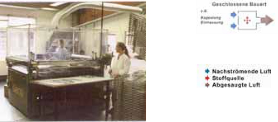
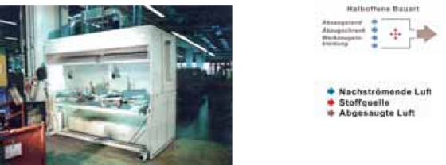
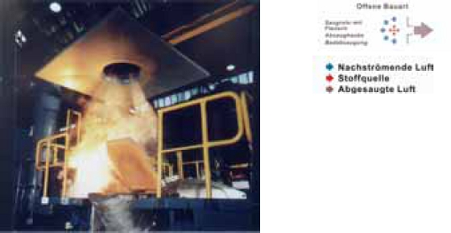

Zu den Anlagenkomponenten zählen Erfassungselemente, Luftleitungen, Abscheider, Ventilatoren sowie Wärmerückgewinnungsanlagen.
Mit Hilfe von Erfassungseinrichtungen werden Luftverunreinigungen an der Austritts- oder Entstehungsquelle erfasst.
Erfassungseinrichtungen lassen sich in drei Bauarten unterteilen. Die Reihenfolge entspricht der abnehmenden Wirksamkeit.
Geschlossene Bauart

Abbildung 9: Kapselung einer Siebdruckmaschine
Halboffene Bauart

Abbildung 10: Lackierstand mit Wirbelhaube
Offene Bauart

Abbildung 11: Düsenplatte zur Absaugung an einem Schmelztiegel
Wesentlich bei der richtigen Auswahl des Erfassungselementes ist, dass der Arbeitsprozess durch die Erfassung nicht behindert wird. Es muss daher nach Lage und Art der Emissionsquelle angepasst sein.
Weitergehende Informationen siehe Anhang 1.
Innerhalb einer lufttechnischen Anlage haben Rohrleitungen und Kanäle die Aufgabe, Luft zu verteilen, zu sammeln und zu transportieren. Sie sind dabei je nach Anwendung unterschiedlichen Belastungen durch reine Luft, Gase, Dämpfe oder Stäube mit Über- oder Unterdruck, Abrieb, hohen Temperaturen, chemischem Angriff usw. ausgesetzt.
Daraus ergeben sich einige Anforderungen, die grundsätzlich erfüllt sein müssen:
Eine sorgfältige Werkstoffauswahl und Dimensionierung ist daher für einen störungsfreien und wirtschaftlichen Betrieb unerlässlich.
Weitergehende Informationen siehe Anhang 2.
Generelle Anforderungen an Rohrleitungen und Kanäle (siehe auch Abschnitt 3.5.3.6 der BG-Regel "Arbeitsplatzlüftung – Lufttechnische Maßnahmen" [BGR 121])
Abscheider, z. B. Filter, dienen der Trennung von festen oder flüssigen Partikeln aus der Luft.
Zur Abscheidung dieser Partikel unterscheidet man:
Demgegenüber werden Gase und Dämpfe durch Adsorption, z. B. Aktivkohle, Absorption, z. B. in Waschflüssigkeit, sowie durch katalytische oder biologische Umwandlung abgeschieden.
Eine gleichzeitige Abscheidung von Partikeln einerseits und Gasen oder Dämpfen andererseits ist nur in Ausnahmefällen, z. B. in filternden Abscheidern, bei Zugabe eines Trockenadditivs oder in Nassabscheidern möglich.
Die Auswahl des geeigneten Systems und seine richtige Auslegung sind für den Betreiber ohne spezielle Erfahrungen meist schwierig, zumal in der betrieblichen Praxis kaum Gelegenheit besteht, verschiedene Systeme unter denselben Bedingungen zu vergleichen. Zudem schreitet die technische Entwicklung ständig fort und manche Erkenntnisse werden von Herstellern, Anlagenbauern und -betreibern aus Wettbewerbsgründen sorgsam gehütet.
Im konkreten Bedarfsfall sollte deshalb für die Planung ein erfahrener Fachingenieur zu Rate gezogen werden und die Eignung des angebotenen Systems, z. B. durch Referenzanlagen, die sich für dieselbe Aufgabenstellung bewährt haben, sichergestellt sein.
Die charakteristischen Eigenschaften der Abscheidesysteme werden in Anhang 3 beschrieben. Einen orientierenden Überblick über die wichtigsten Bauarten und typischen Kenngrößen sowie über Einsatzmöglichkeiten und -grenzen sind dort in Tabelle 1 (Filternde Abscheider) und Tabelle 2 (Massenkraft-, Elektro- und Nassabscheider) zusammengestellt.
Weitergehende Informationen siehe Anhang 3.
Ventilatoren müssen so ausgelegt sein, dass der zur Erfassung der Gefahrstoffe erforderliche Volumenstrom stets vorhanden ist. Dabei sind Strömungswiderstände durch Anlagenteile, z. B. Luftleitungen, Drosseleinrichtungen, Abscheider, zu berücksichtigen.
Bei der Anordnung des Ventilators ist eine leichte Zugänglichkeit für Instandhaltungs- und Reinigungsarbeiten zu gewährleisten.
Grundsätzlich sind erforderliche Maßnahmen zur Reduzierung von Luft- und Körperschall zu berücksichtigen. Unter anderem kann es sinnvoll sein, den Ventilator außerhalb des Arbeitsraumes anzuordnen.
Auf Grund gesetzlicher Bestimmungen (siehe § 1, § 3 Abs. 1 der Energieeinsparverordnung) hat der Betreiber die Wärmeverluste eines Gebäudes, in dem sich seine Betriebsstätte befindet, auf ein technisch erreichbares Maß zu begrenzen. Dazu zählt auch, dass die in der Abluft (Raumabluft, Erfassungsluft) enthaltene Wärme einer Wiedernutzung zugeführt und gegebenenfalls überschüssige Wärme an Dritte abgegeben werden sollte.
Der Austausch von Raumluft durch Außenluft (Frischluft) führt während der Heizperioden zu Wärmeverlusten, die z. B. durch die Beheizung der Zuluft ausgeglichen werden müssen.
Zur Wärmenutzung bei lufttechnischen Anlagen sind zwei unterschiedliche Verfahren zu berücksichtigen:
Bei der Wärmerückgewinnung wird die Wärme über Wärmetauscher von der Abluft oder Erfassungsluft an die Zuluft übertragen.
Bei der Reinluftrückführung wird die Erfassungsluft gereinigt und anschließend insgesamt oder teilweise in den Arbeitsraum zurückgeführt.
Eine Rückführung gereinigter Erfassungsluft ist nur gemäß der Gefahrstoffverordnung zulässig.
Während bei der Wärmerückgewinnung auf Grund von Übertragungsverlusten nur ein Teil der Wärme zurückgewonnen werden kann, wird bei der Reinluftrückführung die in der Erfassungsluft enthaltene Wärme nahezu vollständig wieder genutzt.
Weitergehende Informationen siehe Anhang 4.